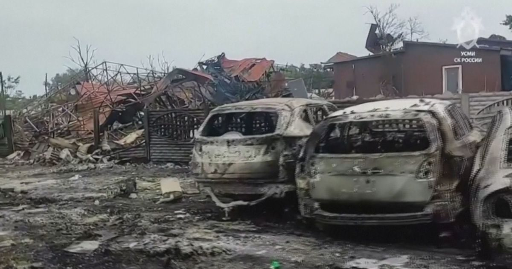

Ucrânia lança 650 drones contra a região de Moscou; uma pessoa morre
Ataque noturno, um dos maiores contra a capital russa, deixou seis feridos e danificou casas; Moscou já havia prometido intensificar ofensiva contra Kiev.

A Ucrânia lançou um ataque de drones em larga escala contra a região de Moscou entre a noite de segunda-feira e a manhã de terça (horário local), segundo autoridades russas. O prefeito Sergey Sobyanin falou em 650 drones enviados entre 20h30 e 5h. Um jovem de 20 anos morreu em Radumlya, no distrito de Solnechnogorsk, a noroeste da capital, e outras seis pessoas ficaram feridas, de acordo com o governador regional, Andrey Vorobyov.
Casas e veículos foram danificados ou destruídos, e as equipes de emergência continuavam trabalhando nas áreas atingidas. No domingo (4), o Ministério da Defesa russo havia anunciado que intensificaria os ataques a Kiev e a outras regiões ucranianas, em resposta a uma entrevista em que o presidente Volodymyr Zelensky prometeu ampliar os bombardeios a refinarias da Rússia.
Os ataques russos à infraestrutura de Kiev, incluindo pontes sobre o rio Dnipro, já vêm afetando a rotina dos cerca de 3 milhões de moradores da capital ucraniana às vésperas do inverno, informa a CNN.